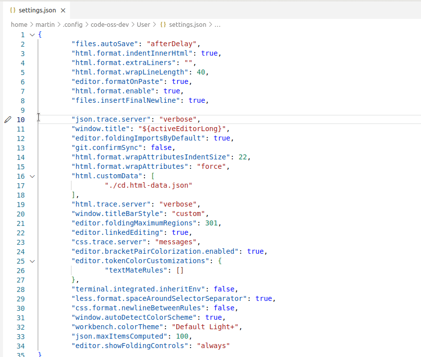

July 2022 (version 1.70)
Update 1.70.1: The update addresses these issues.
Update 1.70.2: The update addresses these issues.
Update 1.70.3: This update is only available for Windows 7 users and is the last release supporting Windows 7.
Downloads: Windows: User System Arm64 | Mac: Universal Intel silicon | Linux: deb rpm tarball Arm snap
Welcome to the July 2022 release of Visual Studio Code. There are many updates in this version that we hope you'll like, some of the key highlights include:
- Title bar customization - Hide/show menu bar, Command Center, or layout control.
- Fold selection - Create your own folded regions in the editor.
- Search multi-select - Select and then act on multiple search results.
- Tree view search and filtering - Find and filter in tree views such as the Find Explorer.
- Terminal improvements - Shell integration on by default, extended PowerShell keybindings.
- Command line option --merge - Use the 3-way merge editor as your default merge tool.
- Notebooks: Go to Most Recently Failed Cell - Jump directly to notebook errors.
- Python Get started experience - Quickly install and configure Python within VS Code.
- Sticky scroll preview - New scrolling UI shows current source code scope.
- Dev container CLI topic - Learn about the updated development container CLI.
If you'd like to read these release notes online, go to Updates on code.visualstudio.com.
Watch the release party: Listen in as the VS Code team discusses some of the new features. You can find the recording of the event on our YouTube channel.
Insiders: Want to try new features as soon as possible? You can download the nightly Insiders build and try the latest updates as soon as they are available.
Workbench
Easier title bar customization
For those using the custom title bar (the default on Windows, macOS, and the web), you may have noticed that we are introducing more interactive content to the title bar. While there are already settings to hide each of these elements individually, you can now right-click the title bar to access a context menu that toggles the menu bar (not shown on macOS desktop), Command Center, and layout controls.

For Windows users expecting the system context menu, the menu can still be triggered by right-clicking the VS Code icon in the top left corner of the window or by pressing Alt+Space. Mouse position is used to determine the behavior when triggering with Alt+Space, so the custom menu will appear if it sits on top of the title bar.
For Linux users, due to issue #156397, the empty space in the title bar will not open a context menu. You must right-click on one of the items in the title bar that you would like to hide.
Improved menu bar folding
With the addition of the Command Center, we tried shrinking the menu bar to a hamburger menu to make space. After hearing user feedback, we switched back to the old menu bar folding behavior until most of the menu is collapsed, and only then switch to the hamburger menu.
Accessible macOS title bar zoom
Also as part of improving the Command Center experience, when interactive components are present in the title bar on macOS, the title bar will now zoom with the rest of the UI for increased accessibility.
Fold selection
The command Create Manual Folding Ranges from Selection (⌘K ⌘, (Windows, Linux Ctrl+K Ctrl+,)) creates a folding range from the currently selected lines and collapses it. The range is called a manual folding range and goes on top of the ranges computed by folding providers.
Manual folding ranges can be removed again with the command Remove Manual Folding Ranges (⌘K ⌘. (Windows, Linux Ctrl+K Ctrl+.)).

Manual folding ranges are especially useful for cases when there isn't programming language support for folding.
Preserve folded ranges
VS Code now keeps folded ranges, even if the folding range is no longer part of the ranges computed by a folding provider. A typical example is when the user comments out the file, starts a string literal, or creates a syntax error that makes it impossible to create all the ranges. Such folded ranges become 'recovered' ranges. They are removed once the folding provider comes back with ranges at the same location or by using the command Remove Manual Folding Ranges.
Hide folding controls
The folding controls in the gutter can now be hidden with the setting "editor.showFoldingControls": "never". Folding ranges can still be expanded and collapsed using the folding commands and shortcuts.
3-way merge editor improvements
We continued polishing the new 3-way merge editor and enabled it by default in this release. The merge editor can be opened by clicking on a conflicting file in the Source Control view.
Highlights include new commands to accept all changes from one side, improved context menus, enhanced diff colors, and a greater emphasis on conflicting versus non-conflicting changes.
We also started exploring alternative diffing algorithms to improve precision of merge conflicts. If you encounter suboptimal change highlighting or alignment in either the diff or the merge editor, we would like to record these cases in our GitHub issue tracker!
Command line option merge
You can now use command line options to bring up the merge editor in VS Code:
-m --merge <path1> <path2> <base> <result> Perform a three-way merge by providing paths for two modified versions of a file, the common origin of both modified versions, and the output file to save merge results.
This enables you to use VS Code as a merge tool for Git, for example, if you configure this in .gitconfig:
[merge]
tool = code
[mergetool "code"]
cmd = code --wait --merge $REMOTE $LOCAL $BASE $MERGED
Search file decorations
Search results in the Search view now feature file decorations and colors on the right to express the file's problems and source control information. This is similar to the file decorations already shown in the File Explorer.
Search multiple selection
The Search view now also supports multi-select. Any actions (for example, dismiss or replace) that you perform on one result in the selection will also be performed on the other selected items.
Tree find control
Tree views, such as the File Explorer, now support the Find control. You can press ⌘F (Windows, Linux Ctrl+F) inside trees to pop up the Find control. You can use the Find control to highlight matched elements or toggle the Filter button to hide all elements that do not match the search term.
Note: If you are used to opening the Find control in the editor when invoking ⌘F (Windows, Linux Ctrl+F) while the File Explorer has focus, you can configure your keybindings accordingly:
{
"key": "cmd+f", // "ctrl+f" on Windows/Linux
"command": "-list.find",
"when": "listFocus && listSupportsFind"
}
Arbitrary file creations via New File
The File > New File... (or New File... link on the Get Started page) experience has been improved to allow for arbitrary file creation. You can now type a file name in the quick input box to create the file on disk.
Terminal
Shell integration enabled by default
Shell integration's automatic injection that was moved out of preview last release is now enabled by default. For supported shell setups (most bash/zsh/pwsh configurations), it should all just work without any changes and you should see command decorations:
Theme: Sapphire Theme
Note: On Windows, you'll need PowerShell 7 (pwsh) for shell integration support. You can install via https://aka.ms/PSWindows.
If the shell integration features don't light up automatically, you will need to set up manual installation, which has been simplified in this release.
Automatic injection is enabled when the terminal.integrated.shellIntegration.enabled setting is set to true, add this to your settings.json file to disable the feature:
"terminal.integrated.shellIntegration.enabled": "false"
This will disable only VS Code's shell integration injection. Even when disabled, if your setup has shell integration enabled for some other terminal that VS Code understands, it will still pick those up. If you don't like the command and/or scroll bar decorations, you can disable just their display, while still taking advantage of the extra functionality that shell integration brings.
Simplified shell integration manual install
Previously manual install took several steps and was platform and shell specific. The new manual install uses the code CLI to fetch the shell integration script and works cross-platform and when connected to a remote window, meaning you can sync it in your dotfiles and it should just work.
# Manual install on bash
[[ "$TERM_PROGRAM" == "vscode" ]] && . "$(code --locate-shell-integration-path bash)"
You can read more about how to install shell integration for other shells at Terminal shell integration.
More shell integration configuration options
The new setting terminal.integrated.shellIntegration.decorationsEnabled lets you display command decorations in either the gutter, the overviewRuler, or neither. For easy access, you can modify this setting via Configure Command Decorations in a context menu when you click on a decoration (select Toggle visibility to display the options dropdown).

You can also configure the default, success, or error icons from the dropdown.
Default color and icon tab settings
The default icon and terminal tab color can be set per folder using terminal.integrated.tabs.defaultIcon and terminal.integrated.tabs.defaultColor.
Extended PowerShell keybindings
There are additional PowerShell keybindings, such as Ctrl+Space, thanks to shell integration. These weren't possible before due to the lack of VT encoding. Provided that shell integration is working in pwsh, the following keybindings should now work:
- Ctrl+Space - Defaults to
MenuCompleteon Windows only. - Alt+Space - Defaults to
SetMark. - Shift+Enter - Defaults to
AddLine. - Shift+End - Defaults to
SelectLine. - Shift+Home - Defaults to
SelectBackwardsLine.
This applies to all platforms, even Linux/macOS where those keybindings aren't normally possible. The defaults can always be reset in your pwsh profile with Set-PSReadLineKeyHandler. If there are additional keybindings that you expect, please let us know.
Run recent command as a replacement for reverse search
When shell integration is enabled, we're aiming run recent command to be a cross-shell drop in replacement for the shell's reverse search (Ctrl+R). There is a new contiguous search mode that is the default when triggering the command. This behaves like Ctrl+R in most shells, with the option of switching back to fuzzy search:
The new inTerminalRunCommandPicker context key is available that allows setting up a keybinding like Ctrl+R to go to the next match. For example, the following keybindings are now a fairly complete replacement for your shell's reverse search, with Ctrl+Alt+R as a fallback to the old behavior:
{ "key": "ctrl+r", "command": "workbench.action.terminal.runRecentCommand", "when": "terminalFocus" },
{ "key": "ctrl+alt+r", "command": "workbench.action.terminal.sendSequence", "args": { "text": "\u0012"/*^R*/ }, "when": "terminalFocus" },
{ "key": "ctrl+r", "command": "workbench.action.quickOpenNavigateNextInViewPicker", "when": "inQuickOpen && inTerminalRunCommandPicker" },
{ "key": "ctrl+c", "command": "workbench.action.closeQuickOpen", "when": "inQuickOpen && inTerminalRunCommandPicker" },
Multi-line commands now display a new line symbol where appropriate and will also use bracketed paste mode, meaning they are treated as if they were pasted for supporting shells. This typically means they will all be added to the same prompt instead of executing them separately.
Other shell integration improvements
Here are the smaller improvements to shell integration:
-
Command navigation has improved visual feedback, showing the "focus border" briefly and then keeping a persistent rectangle in the gutter to help highlight the position in the buffer.
-
The new
workbench.action.terminal.copyLastCommandcommand is available to allow a keybinding to copy the last command's output (shortcut for Ctrl/Cmd+Shift+Up, Ctrl/Cmd+C, Escape, Ctrl/Cmd+End). -
Bash shell integration:
- More
$PROMPT_COMMANDformats are supported. - Shell integration should work even better when the
bash-preexechelper is being used already.
- More
Rendering improvements
Several improvements were made to terminal rendering when GPU acceleration is enabled:
-
Semi-circle Powerline symbols are now custom rendered. Like the arrow symbols in the previous release, these should blend seamlessly with adjacent cells and extend to the height of the cell even when line height is used.
-
Round cornered box drawing characters (
╭,╮,╰,╯) now use a smoother curve. -
Improved clipping of glyphs when the background color changes, this was commonly seen when
npmoutputs a warning. -
Similar to the clipping problem above, there was an issue where the anti-aliasing in some glyphs would overlap other characters and degrade the visuals. This problem is most easily illustrated using a background example like above. A pixel in the
kofWorkcould also escape the bounds of the cell in the other direction. This pixel will no longer appear in the glyph at all since it's removed for being nearly the same color as the background.
Source Control
Action button improvements
We continued to polish the Source Control action button based on user feedback:
- The Sync Changes action button is only shown when there is a high degree of certainty that the local branch is either ahead or behind the remote tracking branch.
- The Commit action button is only enabled based on the list of changed resources while factoring in the smart commit settings:
git.enableSmartCommitgit.suggestSmartCommitgit.smartCommitChanges
- The Commit action button icon is updated based on the branch protection settings:
git.branchProtectiongit.branchProtectionPrompt
Improved rebase conflict resolution
This milestone we addressed some smaller issues in the rebase flow when resolving merge conflicts. Users should now be able to continue the rebase operation using the Commit button in the Source Control view after resolving all merge conflicts.
Commit input field spell checking
This milestone we confirmed that all the necessary extension APIs are available to support spell checking in the commit input field. We reached out to the authors of two popular spell checking extensions and submitted pull requests illustrating how to update their extensions to provide spell checking for commit description text.
Debugging
JavaScript debugging
When you create a launch config to debug a JavaScript/TypeScript program, you can set "console": "integratedTerminal" to run that program in a terminal (rather than the process being spawned directly). A few months ago, we noticed that "args" in the launch.json configuration were partly escaped for the shell, but not entirely. This meant that attempting to pass an argument to your program could accidentally trigger special behavior in your shell. We cleaned this up, then realized that setting arguments that include characters with special meanings for the shell is a useful thing to do, and that some users were relying on this behavior.
We debated the correct fix and decided that this behavior should be opt-in, and that changes to the Debug Adapter Protocol (DAP) were required. We made this change to DAP, implemented it in VS Code and in js-debug, and other debug adapters should be soon to follow.
Here's how to use the new behavior in a node launch configuration:
{
"type": "node",
"console": "integratedTerminal",
...
// If you pass args as a single string, the characters will not be escaped for the terminal,
// so the command in backticks will be evaluated, and output will be redirected to "outfile".
// The user is responsible for knowing the type of shell that this will be run in,
// and doing any escaping necessary.
"args": "`echo hello` > outfile",
// If you pass args as an array, the characters will be escaped for the terminal,
// so that the program receives them verbatim.
"args": ["`echo hello` > outfile"]
}
Picker for debug sessions
When debugging, you can now run Debug: Select Debug Session in the Command Palette. This shows a picker with your active debug sessions, which you can use to search and filter your individual debug sessions. The description for each picker item will show the session that spawned it, if applicable.
Selecting an item in the picker will focus the debug session in the Call Stack view. Debug actions (for example, Pause, Step, Restart, Stop) will be performed on the focused debug session. Selecting a session also shows the session's Debug Console.
Tasks
Filter support for Run Task command
The Tasks: Run Task (workbench.action.tasks.runTask) action supports filtering by task name and type for a more concise and configurable way to select and execute tasks.
For example:
{
"key": "ctrl+h",
"command": "workbench.action.tasks.runTask",
"args": {
"task": "VS Code - Build",
"type": "npm"
}
}
Improved automatic tasks flow
The Trusted Workspace feature allows VS Code to simplify the flow for running automatic tasks. By default, automatic tasks will run if a folder is trusted and you'll be prompt once per folder otherwise. This behavior can be configured with the task.allowAutomaticTasks setting (default auto) to always (on) or never (off) prompt before running an automatic task.
Languages
Keep newlines when formatting JSON
You can now keep the initial line position when formatting a line in a JSON documents. For example, an array containing values on one line will still keep these values on the same line after formatting. Extra line breaks (newlines) in JSON files are also preserved. To enable this feature, set the option JSON > Format: Keep Lines in the Setting editor.
Notebooks
Go to Most Recently Failed Cell
If your most recently run cell failed, there is now a button that will jump to that cell. You can also run Notebook: Go to Most Recently Failed Cell to perform the same action.
This is useful when you run a group of cells and want to know which cell failed and halted the group execution.
Notebook Markdown Preview attachment rendering
It is now possible to render embedded base64 images within a Jupyter notebook.
Images pasted into a Jupyter notebook and referenced via  will now be rendered as intended within VS Code notebooks.
The following Markdown source code:
Will be rendered as:
Share Notebook links
The Copy vscode.dev Link command in the Share submenu now supports notebook links.
VS Code for the Web
Set Display Language
You can now set the display language of the browser using the Set Display Language button available on the language pack extension in the Extensions view.
Once set, you can clear the display language by using the Clear Display Language button on the currently set language pack extension.
Contributions to extensions
Python
Get started experience
The Python extension walkthrough now smoothly transitions users to installing Python if they need to, and selecting it. Microsoft Store or an appropriate walkthrough tile is opened when Python is not installed and users can auto-run the displayed instructions. Any prompts related to interpreters are only shown when a user action requires an interpreter, and not on start-up. Also, UI prompts have been improved to be more precise about errors and suggested changes.
Interpreter information in the Status bar
A new setting python.interpreter.infoVisibility was added, which controls when information about the selected interpreter is displayed in the Status bar. By default, interpreter information will only be shown when Python-related files are opened (onPythonRelated). It can be set to always to revert to the old behavior where the selected interpreter is displayed regardless of what file is opened. A warning status is added to indicate situations when the selected interpreter is invalid:
Automatic debug configurations
The Python extension now supports automatic debug configuration that analyzes the current project and provides you with a debug configuration that does not require additional modification.
The extension recognizes Django, Flask, and FastApi projects, as well as simple Python files.
You can learn more about automatic debug configuration and some of the recent improvements.

Experimental extension: WWBD
There is a new experimental Python extension named WWBD that acts as a sandbox for Python environment workflow ideas. As of now, there is a Create Environment command for virtual environments to see if a single command can help users set up a new virtual environment (see the WWBD extension page for the full details and other extension features). You can read the Ideas category in the project repository for other ideas that are being considered, including conda support.
Jupyter
Copy plot images to clipboard
It is now possible in the Jupyter extension to copy plots in cell outputs to the clipboard. Make sure you have the correct presentation selected as only PNG output is currently supported:
Once you have set the correct presentation type, select the copy to clipboard button in the upper right:
Web extension
The following features were ported to the web version of the Jupyter extension:
- Plot viewer
- Dataframe viewer
If you'd like to experiment with the functionality, launch Jupyter from your local machine with:
jupyter notebook --no-browser --NotebookApp.allow_origin_pat=https://.*\.vscode-cdn\.net
And then connect to it using the command Jupyter: Specify Jupyter server for connections from within vscode.dev.
For more information (and to comment), see this discussion item.
Interactive Window restore
Interactive Window sessions can now be restored across VS Code window reloads by turning on the setting interactiveWindow.restore.
Limitations: Raw kernel states are not persistent across window reloads (see more information in this discussion item). If you are using a remote Jupyter server, the Interactive Window will be connected to previous kernel sessions on reloads.
Loading environment variables from .env files
A number of fixes have been made to loading environment variables from .env files, including detecting changes to the .env files. Python kernels will now load environment variables from the file defined in the setting python.envFile.
GitHub Pull Requests and Issues
There has been more progress on the GitHub Pull Requests and Issues extension, which allows you to work on, create, and manage pull requests and issues. Highlights of this release include:
- There is a new button to only show the changes to a pull request since the viewer's last review.
- The new Commit & Create Pull Request action in the Source Control view lets you do a Git commit and go to the Create PR view in one step.
- The
githubPullRequests.pullRequestDescriptionsetting can be used to configure the source text for PR descriptions.
Check out the changelog for the 0.48.0 release of the extension to see the other highlights.
Remote Development
Work continues on the Remote Development extensions, which allow you to use a container, remote machine, or the Windows Subsystem for Linux (WSL) as a full-featured development environment.
You can learn about new extension features and bug fixes in the Remote Development release notes.
Preview features
Editor sticky scroll
It is now possible to display UI showing which scope the user is in during scrolling. The "sticky scroll" UI will show which class/interface/namespace/function/method/constructor the top of the editor is in, helping you know the location within a document. Enable sticky scroll with the editor.experimental.stickyScroll.enabled setting.
TypeScript 4.8 support
This update includes support for the upcoming TypeScript 4.8 release. See the TypeScript 4.8 iteration plan for more details on what the TypeScript team is currently working on.
To start using the TypeScript 4.8 nightly builds, install the TypeScript Nightly extension.
Settings Profiles
We have been working the last couple of months to support Settings Profiles in VS Code, which is one of the most popular asks from the community. This feature is available for preview in the Insiders release via workbench.experimental.settingsProfiles.enabled setting. Try it out and let us know your feedback by creating issues in the VS Code repository or commenting in issue #116740.
In this milestone, we also added support for Settings Profiles in VS Code for the Web. You can try it out using insiders.vscode.dev and the same workbench.experimental.settingsProfiles.enabled setting.
Theme: Light Pink
Task reconnection
On window reload, watch tasks can be reconnected to by enabling task.experimental.reconnection, which results in a faster return to work following an extension change or VS Code version update.
Code Actions
We have been working to provide a better experience with Code Actions in VS Code. Code Actions include Refactorings, Source Actions, and Quick Fixes.
The new experimental Code Actions control can be opened from the context menu by selecting Refactor or Source Action, from a lighbulb, or via a Quick Fix. Try it out via the editor.experimental.useCustomCodeActionMenu setting. Let us know about any feedback by creating issues in the VS Code repository or commenting in issue #152913.
Refactoring previews for Code Actions are also accessible from the new Code Action control. Hover over enabled items to view how to preview. Custom keybindings are supported for selection of Code Actions, as well as to preview the selection.
In this milestone, we also added support for custom keybindings for Code Actions, which includes Quick Fix (⌘. (Windows, Linux Ctrl+.)). You can try it out by adding the following snippet with your desired keyboard shortcuts to keybindings.json.
[
{
"key": "ctrl+k",
"when": "codeActionMenuVisible",
"command": "focusPreviousCodeAction"
},
{
"key": "ctrl+j",
"when": "codeActionMenuVisible",
"command": "focusNextCodeAction"
}
]
Edit Sessions across VS Code for the Web and desktop
Work continues on Edit Sessions, which let you bring your uncommitted changes along when you continue working on a repository across VS Code for the Web or desktop. Some highlights include:
- You can now delete all stored Edit Sessions from the cloud when turning off Edit Sessions functionality.
- Signing in with Microsoft authentication is now supported.
- If you are having trouble locating your Edit Sessions, you can view all your Edit Sessions with the Edit Sessions: Show Edit Sessions command.
To try out Edit Sessions, set workbench.experimental.editSessions.enabled in your settings and use the Edit Sessions: Store Current Edit Session command, signing in with GitHub or Microsoft authentication when prompted. Then use the Edit Sessions: Resume Latest Edit Session command in a repository on another machine or VS Code instance to restore the working contents of all modified files to your workspace. You can sign out of Edit Sessions at any time using the Edit Sessions: Sign Out command.
As we continue to iterate on the Edit Sessions experience, try it out and share your feedback with us via a comment in issue #141293.
Extension Authoring
'not in' operator for 'when' clauses
There is an operator that already exists for when clauses, in, which allows for dynamic lookup of a context key's value within another context key with an array or object-type value. We've added a new operator not in, which negates this. See the when clause contexts documentation for details.
htmlLanguageParticipants contribution point
A new contribution point htmlLanguageParticipants allows HTML-like languages to declare that they want to inherit all HTML language server features such as code completions, hovers, and outline. This is useful for programming language extensions that don't want to implement a full language server.
An example is the built-in handlebars extension that now adds itself to the htmlLanguageParticipants in its package.json:
"contributes": {
"htmlLanguageParticipants": [
{
"languageId": "handlebars"
}
]
}
The Quarkus extension has already adopted the contribution point. It enriches the HTML features with additional proposals for the embedded Qute HTML template language:
Drop into editor API
The text editor drop API lets extensions handle dropping of files or other content into text editors. These drop events can come from within VS Code, such as dragging a file from VS Code's Explorer into a text editor, or can be generated by dropping a file from your operating system into VS Code.
To drop a file into an editor, users can hold down kbsytyle(Shift) while dragging and then drop the file to a specific location in the file. At this point, your extension can choose what to do with the dropped data.
Check out the drop into editor extension sample for a simple example of this API in action.
Proposed APIs
Every milestone comes with new proposed APIs and extension authors can try them out. As always, we want your feedback. Here are the steps to try out a proposed API:
- Find a proposal that you want to try and add its name to
package.json#enabledApiProposals. - Use the latest vscode-dts and run
vscode-dts dev. It will download the correspondingd.tsfiles into your workspace. - You can now program against the proposal.
You cannot publish an extension that uses a proposed API. There may be breaking changes in the next release and we never want to break existing extensions.
Webview context menus
The new webview context menu proposal makes it easy for advanced webviews to customize the context menus that shows when a user right-clicks inside a webview. This new contribution point uses VS Code's normal context menus, so custom menus fit right in with the rest of the editor. Webviews can also show custom context menus for different sections of the webview.
To try out this new API, you need to enable the contribWebviewContext proposal.
"enabledApiProposals": [
"contribWebviewContext"
]
To add a new context menu item to your webview, add a new entry in menus under the new webview/context section. Each contribution takes a command (which is also where the title comes from) and a when clause. The when clause should include webview == 'YOUR_WEBVIEW_VIEW_TYPE' to make sure the context menus only apply to your extension's webviews:
"contributes": {
"menus": {
"webview/context": [
{
"command": "catCoding.yarn",
"when": "webview == 'catCoding'"
},
{
"command": "catCoding.insertLion",
"when": "webview == 'catCoding' && webviewSection == 'editor'"
}
]
},
"commands": [
{
"command": "catCoding.yarn",
"title": "Yarn 🧶",
"category": "Cat Coding"
},
{
"command": "catCoding.insertLion",
"title": "Insert 🦁",
"category": "Cat Coding"
},
...
]
}
Inside of the webview, you can also set the contexts for specific areas of the HTML using the data-vscode-context data attribute (or in JavaScript with dataset.vscodeContext). The data-vscode-context value is a JSON object that specifies the contexts to set when the user right-clicks on the element. The final context is determined by going from the document root to the element that was clicked.
Consider this HTML for example:
<div class="main" data-vscode-context='{"webviewSection": "main", "mouseCount": 4}'>
<h1>Cat Coding</h1>
<textarea data-vscode-context='{"webviewSection": "editor", "preventDefaultContextMenuItems": true}'></textarea>
</div>
If the users right-clicks on the textarea, the following contexts will be set:
webviewSection == 'editor'— This overrideswebviewSectionfrom the parent element.mouseCount == 4— This is inherited from the parent element.preventDefaultContextMenuItems == true— This is a special context that hides the copy and paste entries that VS Code normally adds to webview context menus.
If the user right-clicks inside of the <textarea>, they will see:
View size
The view size proposal lets extensions provide weights to the views they contribute:
"contributes": {
"views": {
"github-pull-request": [
{
"id": "github:createPullRequest",
"type": "webview",
"name": "Create Pull Request",
"size": 2
},
{
"id": "github:compareChanges",
"name": "Compare Changes",
"size": 1
}
]
}
}
The size works similarly to the CSS property flex-grow. In the above example, the view with "size": 2 will be twice the size of the view with "size": 1. The size property is only respected if the view container is contributed by the same extension.
Extensible HTML notebook renderer
Our built-in notebook renderers now expose an experimental API that lets extensions customize rendering of HTML content. This API currently exposes a single hook, postRender, which is invoked after the initial rendering of the HTML content.
To try using this experimental API, your extension needs to extend the vscode.builtin-renderer API.
"contributes": {
"notebookRenderer": [
{
"id": "vscode-samples.my-custom-html-extension",
"displayName": "My custom html renderer extension",
"entrypoint": {
"extends": "vscode.builtin-renderer",
"path": "./out/main.js"
}
}
]
}
Your renderer can then register a rendering hook on the vscode-builtin-renderer:
import type { RendererContext } from 'vscode-notebook-renderer';
export async function activate(ctx: RendererContext<void>) {
const htmlRenderer = await ctx.getRenderer('vscode.builtin-renderer');
if (!htmlRenderer) {
throw new Error(`Could not load 'vscode.builtin-renderer'`);
}
htmlRenderer.experimental_registerHtmlRenderingHook({
// Invoked after the HTML content for `outputItem` has been rendered to `element`
postRender(outputItem: OutputItem, element: HTMLElement): HTMLElement | undefined {
// You can either modify `element` or return a replacement element
}
});
}
Test out this new API and let us know what you think!
Debug Adapter Protocol
argsCanBeInterpretedByShell for RunInTerminalRequest
The RunInTerminalRequest supports a new property, argsCanBeInterpretedByShell, which tells the client whether special shell characters in the command args should be left unescaped. This is to enable users to write launch configs that will start in a terminal, and include characters that should be interpreted by the shell.
Engineering
Progress for Electron sandbox support
This milestone we made substantial progress toward enabling Electron's sandbox by default. We plan on enabling sandbox in August for Insiders and eventually make it the default in Stable VS Code.
For the curious out there, configuring "window.experimental.useSandbox": true in settings will enable sandbox mode. Hopefully you should not notice anything changing, but if you find issues, please report them back to us.
Markdown language server
This iteration, we extracted much of VS Code's tooling for writing Markdown into a library and language server. This includes our tooling for path completions, document outlines, and diagnostics.
VS Code's built-in Markdown extension has already switched to using this new language server, although hopefully you will not notice any difference in behavior. This switch should help improve performance though, as it moves the Markdown tooling to its own process. Moving to a language server also helped us improve the performance of our experimental Markdown link diagnostics.
Our hope is that other tools and editors will also be able to benefit from these new packages and even contribute back to them. Together we can build better Markdown tooling for everyone! If you are interested, check out the relevant projects:
- Markdown Language Service — A TypeScript library that provides tools for working with Markdown.
- Markdown Language Server — A language server for Markdown built using the language service.
Debian package dependencies
Debian package dependencies are now generated by a script rather than hard-coded. This closes an issue filed back in 2016 where missing dependencies would cause the program to crash at runtime on some machines.
Documentation and extensions
Development container CLI
The dev container command-line interface (CLI) topic was updated for the newest version of the CLI. The dev container CLI lets you build and run dev containers and is an open-source reference implementation of the Development Containers Specification
Azure Developer CLI (azd)
The Azure Developer CLI and its complementary VS Code extension are now in public preview. The Azure Developer CLI (azd) accelerates the time it takes you to get from your local development environment to Azure by providing developer-friendly commands that map to key stages in your workflow: code, build, deploy, monitor, repeat.
The Azure Developer CLI uses extensible templates that include everything you need to get an application up and running in Azure. The templates include best practices, application code and reusable infrastructure as code assets. More than that, they cover end-to-end scenarios that go far past "Hello World!".
With the Azure Developer CLI, you can initialize, provision, and deploy an application, or better yet, use 'azd up' to do so in one step! For a list of supported azd commands, see the Developer CLI reference.
Thank you
Last but certainly not least, a big Thank You to the contributors of VS Code.
Issue tracking
Contributions to our issue tracking:
Pull requests
Contributions to vscode:
- @0evan (Evan Spensley): Distinguish testing decoration labels PR #155433
- @amanasifkhalid (Aman Khalid): Close #134566: Added settings for terminal tab default color/icon PR #147463
- @angelozerr (Angelo): Contribute to html language server with a custom language. PR #146731
- @babakks (Babak K. Shandiz)
- 🎁 Add "Surround with snippet" to quick fix menu PR #152718
- 🔨 Fix markdown diagnostics issue with files having dot in their names PR #153206
- @Balastrong (Leonardo Montini): Properly display the warning message PR #154266
- @CGNonofr (Loïc Mangeonjean): Provide trigger and documentation to monaco code action provider PR #149937
- @eamodio (Eric Amodio): Closes #54285 adds webview/context contribution PR #154524
- @eltociear (Ikko Ashimine): Fix typo in languageDetectionWorkerServiceImpl.ts PR #155923
- @fadeevab (Alexander Fadeev): Add Makefile tests for upgraded grammar: comma, comment, shebang PR #154625
- @FantasqueX (FantasqueX): Replace the deprecated canceled with Cancellation Error. PR #156094
- @ferdnyc (Frank Dana)
- RPM: Make /usr/bin/code owned by package PR #142907
- Remove fakeroot wrapper, when building .rpm packages PR #153249
- @gjsjohnmurray (John Murray): Try to prevent update of user-type Windows installation when running as admin (#_148428) PR #155631
- @jbicker (Jan Bicker): Fixed wrong SignatureInformation.activeParameter comment PR #155279
- @jeanp413 (Jean Pierre): Proposal TerminalExitStatus.reason PR #152833
- @jlelong (Jerome Lelong): Add word boundary to bracket pair delimiters starting or ending with letters PR #151204
- @joscol (Joshua Cole): Allow CommentNode to change body text and enter edit mode at the same time PR #155767
- @jzyrobert (Robert Jin)
- Add Expand all button in explorer view PR #153614
- Edit showFoldingControls to have a never setting PR #153764
- @liby (Bryan Lee): Add support for angle bracket matching and colorization in TypeScript PR #151705
- @mingwiki: Fix Socks5 Proxy Regex Checking Warning PR #144954
- @MonadChains (MonadChains): Add command to copy output of the last command (#_152097) PR #153235
- @nirabhromakhal (nirabhromakhal): Fixed issue where status bar can overflow without affecting notification beak PR #155649
- @PieterBranderhorst: Make hidden fold ranges independent of range provider, add manual fol… PR #139779
- @pingren (Ping)
- Fix #114461 PR #151824
- Fix tab position when wrapping tabs PR #156116
- @pwxn (Paul Landers): Add commands to scroll editor to top/bottom PR #155861
- @qingpeng9802 (Qingpeng Li): Remove es5 class compat PR #153853
- @r3m0t (Tomer Chachamu)
- Fix test error not showing when expanded PR #153994
- Update breadcrumbs when workspace folders update PR #154616
- @SamirPS (SamirAk): Code scanning: deprecation of CodeQL Action v1 PR #156271
- @ssigwart (Stephen Sigwart)
- Fix terminals in editor area not reloading PR #151852
- Fix Suggestion Widget Hanging PR #152011
- Add keybindings for search editor file filters PR #153954
- Detect terminal links with space, then line:col PR #153957
- Fix menu shortcuts not working after a webview is shown PR #154648
- @SvanT (Svante Boberg): Add missing disposals PR #155976
- @yiliang114 (易良): fix: typos PR #155310
Contributions to vscode-generator-code:
- @hawkticehurst (Hawk Ticehurst)
- @MatejKastak: chore: Unify indentation in generated package.json PR #357
- @nhedger (Nicolas Hedger): Add pnpm as a package manager PR #339
Contributions to vscode-js-debug:
- @Balastrong (Leonardo Montini): Double check if native tostring is [object *] PR #1339
Contributions to vscode-json-languageservice:
- @bytemain (Artin): feat: support number const PR #141
- @octogonz (Pete Gonzalez): Don't report "Duplicate object key" when "//" is used for comments PR #144
Contributions to monaco-editor:
- @alexander-zw (Alexander Wu): [webpack readme] Add how to get languages/features PR #3171
- @MasterOdin (Matthew Peveler): Remove duplicate testcases for mysql PR #3138
- @tonilastre (Toni): Add config and tokenizer for query language Cypher PR #3102